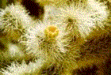

Who Are We?
Mayer Photography is a family-owned business of professional photographers, providing our customers with the highest-quality images and services. We specialize in portraits, senior class photos, and weddings. If your special day is approaching, pay us a visit and we'll show you how Mayer Photography can help you preserve your memories forever.
A Family Business
Ted and Jane Mayer started Mayer Photography in 1972 after graduating from the New England School of Photography. Their work has won numerous awards in competitions across the country. Joining the business in 1992, their sons, Jason and Andrew, uphold the family tradition of excellence in photography.

Read Customer Testimonials